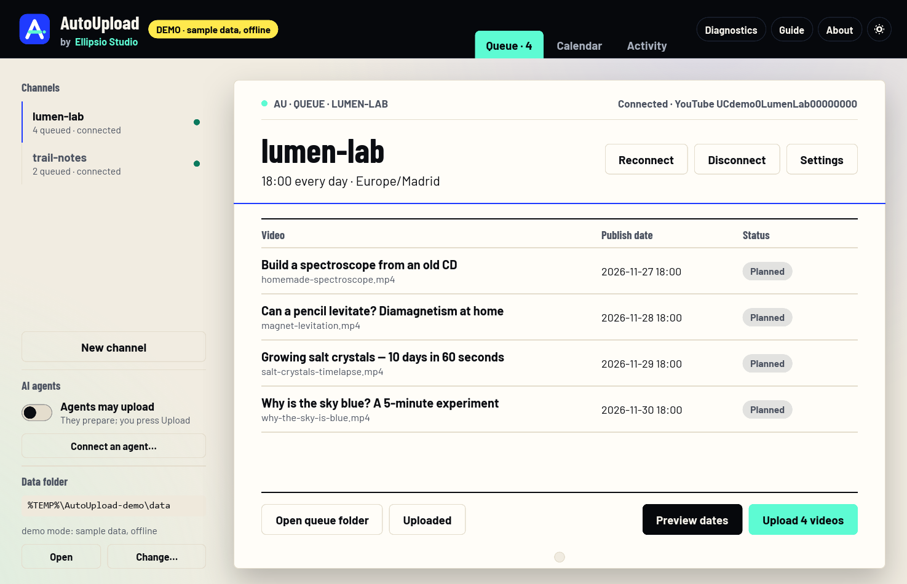
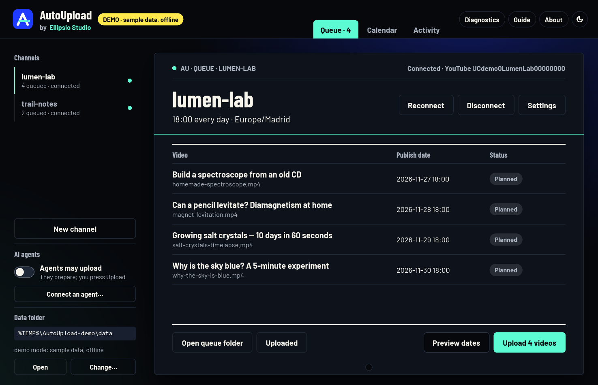
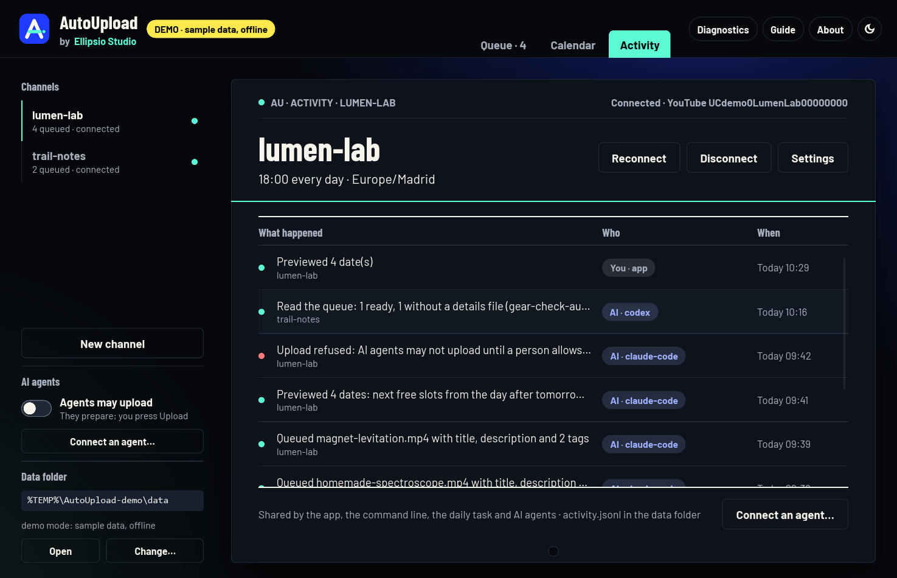

AU · 01 · INICIOÚltima actualización: 25 de noviembre de 2026
AutoUpload sube y programa tus videos en YouTube, desde tu propia computadora.
Una aplicación nativa y gratuita de Ellipsio Studio para Windows, macOS y Linux. Envía tus videos directamente al canal de YouTube que conectes, como subidas privadas con fecha de publicación, se comunica con nadie más que con Google y, si quieres, deja que un agente de IA haga el trabajo pesado.
Ilustración de una subida. El nombre del archivo y la fecha son ejemplos.
La aplicación


Pon cada video terminado en la carpeta de cola de su canal, con un archivo de datos breve. Preview dates muestra el horario de publicación que recibirá cada uno; Upload te pide confirmación y luego los envía. Puedes probar todos los botones sin una cuenta de Google: inicia la app con --demo.
Por qué es distinta
- Nativa, escrita en Rust. Un programa pequeño por sistema, sin nada más que instalar: sin Python, sin Node, sin motor de navegador dentro.
- Primero en tu computadora. No hay servidor ni cuenta de AutoUpload. Tus archivos, tu inicio de sesión y tu historial se quedan en tu computadora, y la app usa tu propio proyecto y tu propia cuota de Google.
- Hecha para agentes de IA. Claude Code, Codex y otros agentes pueden poner tus videos en cola con títulos, descripciones y etiquetas, y mostrar las fechas. Solo suben si tú lo permites, y la app muestra todo lo que hicieron.
- Segura por defecto. Nada se sube sin tu confirmación, nada se publica de inmediato y nunca se sube dos veces el mismo archivo.
Deja que un agente de IA haga el trabajo pesado


AutoUpload funciona como servidor MCP, la forma estándar en que los agentes de IA usan herramientas. Dile a tu agente «pon en cola todos los videos de mi carpeta de exportaciones con un buen título y etiquetas, y luego muestra las fechas», y mira cómo lo hace en la pestaña Activity. Cómo conectar un agente.
Qué hace AutoUpload
- Sube archivos de video desde una carpeta de tu computadora a un canal de YouTube que hayas conectado, como videos privados con hora de publicación programada.
- Pone el título, la descripción, las etiquetas, la miniatura, los subtítulos y la lista de reproducción que preparaste para cada video.
- Lee la lista de videos programados y publicados de ese canal para elegir el siguiente horario libre y confirmar que sube al canal correcto.
- Guarda un pequeño registro en tu computadora para no subir nunca dos veces el mismo archivo.
No hace nada más. No borra videos, no lee comentarios, no publica en otros servicios ni accede a ninguna otra parte de tu cuenta de Google.
Qué autorizas al pulsar «Permitir»
La primera vez que conectas un canal, Google muestra su propia pantalla de consentimiento con los permisos de abajo, en las palabras de Google. No pasa nada hasta que eliges Permitir. Pulsa un permiso para ver exactamente cómo lo usa AutoUpload.
«Administra tus videos de YouTube»https://www.googleapis.com/auth/youtube.upload
- Qué hace AutoUpload con él
- Sube los archivos de video que pusiste en la cola, como videos privados con hora de publicación programada, y les pone la miniatura.
- Qué no hace nunca con él
- Nunca sube un archivo que no hayas puesto en la cola, y nunca sube a un canal distinto del que conectaste.
«Ver, editar y borrar de forma permanente tus videos, calificaciones, comentarios y subtítulos de YouTube»https://www.googleapis.com/auth/youtube.force-ssl
- Qué hace AutoUpload con él
- Añade los subtítulos que preparaste, añade el video nuevo a la lista de reproducción que indicaste y actualiza los videos que él mismo subió (por ejemplo, su hora de publicación programada).
- Qué no hace nunca con él
- Nunca borra un video.
- Nunca califica videos y nunca lee, publica ni borra comentarios.
- Nunca edita videos que no haya subido él.
- Por qué la frase de Google es más amplia
- Google agrupa subtítulos, listas y actualizaciones de videos en este único permiso; no existe uno más limitado. La frase describe todo lo que el permiso permitiría, no lo que hace AutoUpload.
«Ve tu cuenta de YouTube»https://www.googleapis.com/auth/youtube.readonly
- Qué hace AutoUpload con él
- Lee el ID de tu canal, para confirmar que sube al canal que conectaste, y las fechas de tus videos programados y publicados, para elegir el siguiente horario libre.
- Qué no hace nunca con él
- Nunca lee tu historial, tus suscripciones, tus mensajes ni tus estadísticas, y no guarda nada de lo que lee salvo el ID del canal.
Esos tres son los únicos permisos que pide AutoUpload. Nunca pide tu correo electrónico, tu nombre o perfil, Gmail, Drive, contactos ni ningún servicio de Google Cloud, y nunca ve tu contraseña de Google.
Adónde van tus datos
No hay servidor de AutoUpload ni base de datos externa. Ellipsio Studio nunca recibe tus videos, los datos de tu cuenta ni tu token de acceso. Todo el detalle está en la Política de privacidad.
Quién lo desarrolla
AutoUpload lo desarrolla Ellipsio Studio, un estudio independiente de Perú. Es gratuito, no vende nada y su código fuente es público bajo la licencia MIT. No está afiliado, respaldado ni patrocinado por Google ni YouTube.